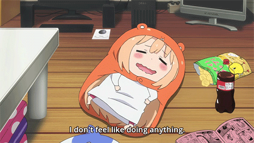

Introduction
Anime is a style of animation that originated in Japan and has become popular worldwide.
It has become a great hobby with different genres you can explore. It is enjoyable
when you
want to relax from your hectic life
or you just dont feel like doing anything and want to pass some time.
If you are new to anime and dont know where to start. I will explain some different
genres and
give some recommendations.

Anime Genres
Shonen
Shonen targets younger male audience 12-18+. The protagonist usually
a young male
goes on epic quests, overcome obstacles and face off rivals. Promoting
theme's of courage,
determination and friendship.
Fig.1 - Naruto
Sienen
Sienen targets young adult or adult male audience 17-40+.
Sienen has
the same stories and themes as shonen, however the are more violent and sexual
it caters to a more mature audience.
 Fig.2 - Tokyo Ghoul
Fig.2 - Tokyo Ghoul
Shoujo
Shoujo opposite to shonen targets young girl audience. Shoujo focuse on interpersonal
relatioinship and romance. But also still include adventure, comedy and action.
The protagonist is almost always female.
Fig.3 - Fruit Basket
Josie
Josie would be opposite of seinen as it targets older adult female viewers. It focuses on
romance more than anything.
They have more realistic feel than shoujo and feature adult woman. There are more erotic,
intense and dark
subjects than other genres. They are based around everyday normal life, but also have dramatic
heavy scenes.
Fig.4 - My Next Life As A Villainess: All Routes Lead To Doom!
Slices of life
Slice of life focuses on human relationships in everyday life setting without the fantasy
element, closest to reality.
This is a feel-good genre that usually hits close to home for many anime fans.
Fig.5 - Horimiya
Conclusion
Anime is diverse and offers something for everyone. Whether it's action, romance,
or even deep philosophy theme. There is an anime for anyone.
Just remember there are worst hobbies out there.